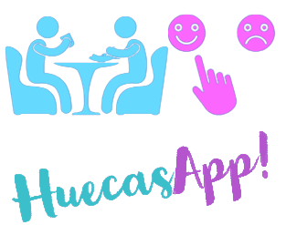

Descarga la APK para Android
Descárgalo Aquí
Esta aplicación está diseñada para que puedas guardar todos los restaurantes que encuentres, para que no olvides su localización y puedas recomendarlos a otras personas. Asi mismo, tú puedas encontrar recomendaciones de otras personas que también recomiende otros lugares.
La ventaja de esto es que no solo verás la típica imagen de una propaganda de una comida ficticia, sino que verás la comida tal cual se la dieron a algún cliente.
Otro beneficio que podemos encontrar en la app es la facilidad para encontrar todos estos restaurantes usando Google Maps, ya que consume los servicios de Google Maps y puedes también filtrar la información por barrios.
Manual de Usuario
Regístrate Gratis y disfruta los Beneficios
Si ya tienes una cuenta podrás logearte con normalidad, sino ve al botón Crear Cuenta y regístrate con un usuario y contraseña.
Una vez registrado podremos acceder a nuestro menú principal.
No olvides tocar el icono de la cámara para poder registrar tu fotografía en tu perfil, ya que sin esta no será posible crear un nuevo usuario.
Menú Principal
Esta es la pantalla principal del usuario donde podrá ver su nombre, el número de encuestas que ha realizado, también tendrá acceso total a todas sus encuestas. Tocando el ítem de las encuestas realizadas podrá ver sus opiniones y toda su información como acceso a la ubicaion GPS, ver sus fotos y videos.
También se encuentra el botón más importante de esta app, este es el botón de Realizar Encuesta donde podrás guardar un nuevo local que quieras recomendar a la comunidad de personas que usan esta app o simplemente la podrás guardar para ti como si fuera una agenda que quieres guardar un lugar al que vas a querer volver.
Si presionas realizar encuestas, iras a llla seccion mas importante de esta app, la siguiente encuesta consta de las siguientes partes: local 1/3, comida 2/3, calificacion 3/3.
Encuesta del Local 1/3
Aquí comienza lo más divertido, hay tres botones superiores especiales con ellos podremos guardar la localización GPS del lugar donde nos encontramos, hacer una foto de la fachada del local, y hacer un video de hasta 10 segundos de este local.


Una vez rellenemos todos los demás ítems de la encuesta deberemos presionar el
Aquí podrás evaluar la presentación del lugar. También puedes guardar videos y fotos del sitio. Además, tendrás acceso a Google Maps para guardar la ubicación en el GPS.
Encuesta de la Comida 2/3
Podrás tomar una foto del plato de comida de la forma que prefieras y rellenar de preferencia todas las preguntas para brindar información a la comunidad para que tenga una idea más clara de cualquier punto.
Encuesta Calificación 3/3
Usa el slider para calificar del 1 al 10 los siguientes aspectos del restaurante, hay que tener en cuenta que estas calificaciones van a ser promediadas y el usuario tendrá acceso más fácilmente al promedio de la calificación.
Otro tema muy importante de esta sección es el botón de compartir con la comunidad, ya que si pones que sí tendrán acceso todas las personas que usen esta app a cada parte de esta encuesta, como sus fotos, su video y la geolocalización donde se encuentra dicho local. También cabe recalcar que si no deseas compartir con la comunidad, se sumará a las encuestas personales que están en el menú del usuario en la parte de abajo, donde de igual manera tendrás acceso a toda la información de cada encuesta que hayas hecho.
Sección Comunidad
En esta sección se podrán apreciar todos los restaurantes que la comunidad ha deseado compartir y recomendar. Podremos observar distintas formas de filtrar esta información para que el usuario encuentre de una forma más eficiente lo que está buscando.